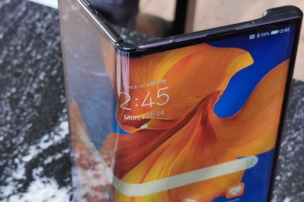

Es oficial: el nuevo Huawei Mate Xs llegará a México en abril

Esto fue rápido. Tras la presentación oficial del nuevo Huawei Mate Xs, que será el siguiente
smartphone plegable del fabricante, hace unos minutos Huawei México nos informó que su llegada
a México está confirmada, y será más pronto de lo que esperábamos.
Según Huawei México, el nuevo Mate Xs se venderá en nuestro país a partir del mes de abril, en una fecha que se
confirmará más adelante, así como su precio oficial.
¡Sorpresa! El Huawei Mate XS sí llega a México. Estará disponible en abril, aún falta confirmar el precio 👀#Huawei#HuaweiMateXs
pic.twitter.com/YCQVSGQY37
— Xataka México (@XatakaMexico) February 24, 2020
Unos 51,000 pesos si hacemos la conversión de su precio en euros
Tal y como lo anunció la compañía esta mañana, el Huawei Mate Xs sí llegará a todo el mundo tras perfeccionar su
línea de producción y mejorar algunos elementos en el dispositivo. Y es que si lo vemos físicamente, es igual al
Mate X que presentaron hace un año y que no salió de China.
Entre las mejoras de este Mate Xs con respecto al modelo anterior, nos encontramos con que su bisagra fue reforzada con circonio
en vez de aluminio. Mientras que el panel también fue reforzado con una segunda capa de polímero óptico, que lo hará hasta un 80% más
resistente que el Mate X, según Huawei.
|